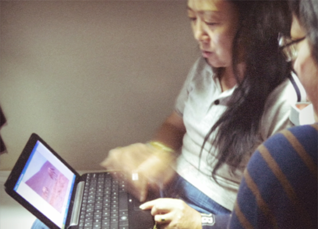

小时候，总以为自己长大后是浪迹天涯的角色，结果现实生活往往令人无奈。如今，远方于我，虽然始终浪漫，却也始终昂贵得不敢奢想太多，每年能够有机会旅行上三两次，已经知足。大多数时候，只能借着翻看《不去会死》这样的书来构想自己的远方白日梦。 此次去湛江，火车上遇见一对老夫妇，和爸妈差不多年纪，是20年前选择从北京到湛江工作的，现在是警校的公务员。路上聊起他们每年都会自助去很多地方旅行，每次都是坐火车，因为飞机太快，来不及感受路途的遥远就已经从一个地方到了另一个地方。阿姨很兴奋地给我展示他们最近去青海的照片。去的时候在当地租了车，自己开着到处乱逛，很享受那样的怡然自得。看了他们的照片，虽然拍得都不怎么考究，但再好的照片也远远不及亲身经历的感受。
想起去年给爸妈买的那本《老爸老妈去旅行》，想着鼓励他们该是时候放下一切出去走走看看了，其实何尝不是对自己的暗示和期待。爸妈虽然因为老爸工作的缘故也经常会有机会去各个城市，但真正的自助行他们还是很少尝试，而差旅和真正的自助行又怎能相提并论。 至于自己，可能在一段时间内，还是只能维持每年三两次短期旅行这样的频率。但远方会好好的保存在我的梦里，总有一天，我会将它装进行囊，打包成一条长期的状态，随性地游荡。